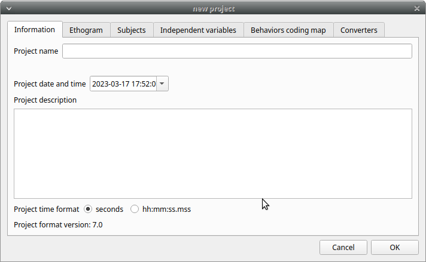
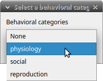
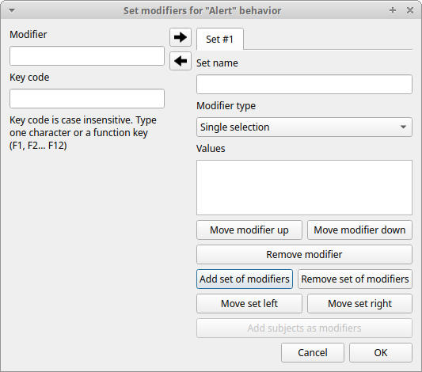
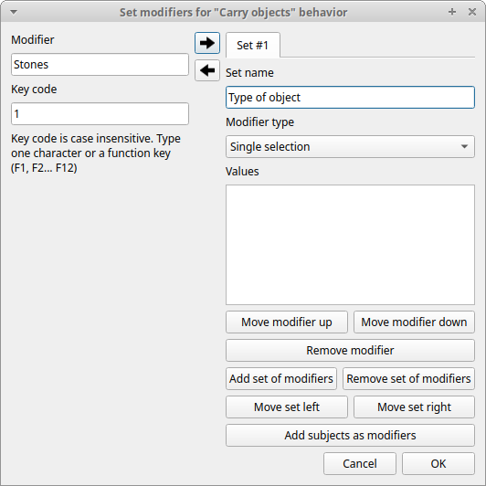
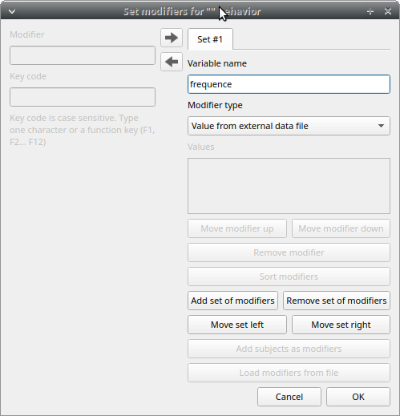
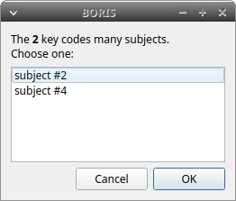
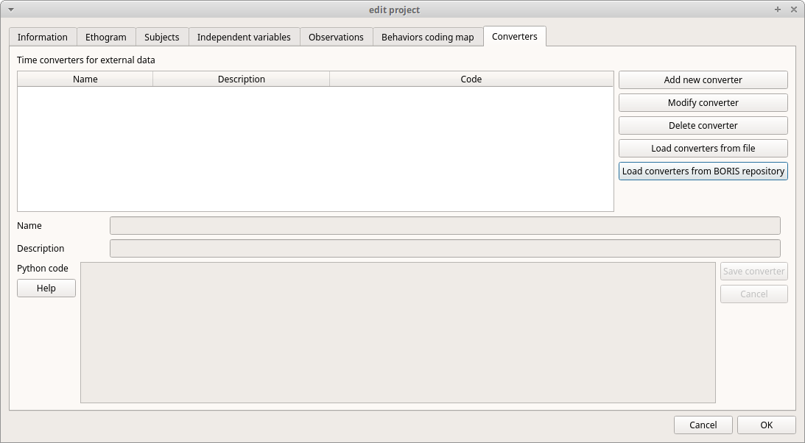

Create a project#
The BORIS project file serves as a container for all project-related information, excluding media files. It encompasses the ethogram, independent variables, subjects' definition, behavioral coding maps, converters, and observation data. To save the project on your local file system, use the "File" > Save Project or Save Project As ... options.
Additionally, you can activate the automatic backup feature in the Preferences section.
Very important
It is EXTREMELY IMPORTANT to perform regular backups of your project files to prevent the loss of data. While software can be reinstalled, your data might be irretrievably lost. Consider using an external drive and/or a cloud service for secure backup.
BORIS allows the creation of an unlimited number of projects, but only one project can be opened at a time.
A video tutorial about creating a project is available at this link.
To create a new project, under the menu File , select New project.
You can determine your project name by writing in the Project name field in the Information tab. Once the project will be saved, the Project file path will show the full path to your project file.
Date will automatically set on the current date and time, but you can alternatively set this info on your media date and time, or whatever you prefer.
Description can host all the relevant information about your project, can be also left empty.
Time format can be alternatively set to seconds or to hh ss.mss.
This choice can be changed at anytime under File > Preferences.
ss.mss.
This choice can be changed at anytime under File > Preferences.

Set an ethogram#
See the Wikipedia ethogram definition.
Switching to the Ethogram tab, you can alternatively:
-
set your ethogram from scratch;
-
import an existing ethogram from another BORIS project;
-
import an ethogram from a JWatcher global definition file (.gdf).
-
import an ethogram from a plain text file or a spreadsheet file (XLSX or ODS)


Set your ethogram from scratch#
By clicking on the Behavior > Add behavior button, you can add a new row in the Ethogram table, and the behavior type will be automatically set to Point event.
The cells with gray background can not be directly edited. You must double-click on them and then select a value.
Behavior types#
2 types of behaviors can be defined. Double-click on the cell and select the type of behavior:
-
- Point event behavior when the behavior has no duration.
-
The behavior will be coded by pressing the defined keyboard key (see below) or by double-clicking to the corresponding row in the Ethogram table.
-
- State event behavior when the behavior has a duration.
-
The behavior start and stop will be coded by pressing the defined keyboard key (see below) or by double-clicking to the corresponding row in the Ethogram table. These behaviors must have a start event and a stop event otherwise an UNPAIRED events warning will be reported when you will close the observation or during an analysis.
-
- Point event with a coding map
-
a Point event that can be coded uusing a coding map.
-
- State event with a coding map
-
a State event that can be coded using a coding map.
You can switch between the types of behavior at your convenience with a double-click on the Behavior type cell. You can also add a Coding map to either a State event (State event with coding map) or a Point event (Point event with coding map). See the Coding map section for details.
An existing behavior can be duplicated using the Clone behavior button. Its code have then to be changed. On a selected behavior, click on the Remove behavior button to remove. The Remove all behaviors button will clear the Ethogram table. Both the above-mentioned operations must be confirmed when prompted.
The behavior can be sorted by clicking on the Ethogram table header. They cannot be sorted manually.
Set keys and codes#
For each behavior you have to set a keyboard key (Key column) that will be then used to code the behavioral events. You can choose whether you want to set a unique key for each behavior or use the same key for more than one behavior. In the case you set the same key for more than a behavior, BORIS will pause your coding and ask which of the behavior you want to record. The keys are case-sensitive.
If your project was created with an old version of BORIS (< v.7) you can use the Convert keys to lower case to convert all keys to lower case otherwise you will have to code your observation using upper case key.
If you open a project file created with a version older than v.7 BORIS will ask you to convert the upper case behavior and subject keys to lower case.
Important
Do not use the / and * keys! They are reserved for the frame-by-frame mode.
In the Code column, you have to add a unique code for each behavior. Duplicated codes are not accepted and BORIS will warn in red about duplicates on the bottom left of the Ethogram tab. The code can be an alphanumeric string (which must not include the pipe character | ).
The Description of your behavior is optional. The Description column can be useful to add information about a specific behavior, its characteristics (e.g. to standardise observation between different users) or to refer to external information (e.g. reference to a previous ethogram).
The columns with a grey background (Behavior type, Color, Category, Modifiers, Exclusion, Modifiers coding map) cannot be edited directly.
The Color column allow to select a color for the behavior. This color will be used for plotting events. Double-click on the cell and select the color you want to associate to the behavior.

Categories of behaviors#
Defining categories of behaviors can be usefull for the analysis of coded events (for example the time budget analysis).
The Category column allow you to include the behavior to a predefined behavioral category.
Double-click on the cell and select the behavioral category for the behavior.

To add, remove or rename a behavioral category, click the Behavioral categories button. A color can also be associated to a behavioral category.

Set the modifiers#
Modifiers can be used to add attributes to a behavior. A single behavior can have two or more modifiers attached (e.g. the behavior play may have solitary or social as modifiers). The use of modifiers can be convenient to significantly reduce the number of keys and simplify the behavioral coding.
4 types of modifiers are available: Single selection, Multiple selection, Numeric and Value from external data file:
- the Single selection type will allow the observer to select only one modifier for the current behavior.
- the Multiple selection type will allow the observer to select one or more modifiers for the current behavior.
- the Numeric type will allow the observer to input a number. For example a distance of interaction.
- the Value from external data file type will save the value of a variable from an external data file.
In BORIS modifiers can also be added in different modifier sets (e.g. play social may have a modifier set (#1) for brothers and another (#2) for sisters). In the case of using sets of modifiers, you can select one/more modifier for each set.
To add modifiers to a behavior, you need to double-click the Modifiers cell corresponding to the behavior you want to add the modifiers to. The following window will show up:

Click the Add a set of modifiers button:

Select the modifier type using the Modifier type combo box. You have to choose between Single selection, Multiple selection Numeric and Value from external data file.
Single selection and Multiple selection modifiers#
Set a name for the new modifiers set by typing it in the Set name edit box. Setting a modifiers\' set name is not mandatory.
Within a set of modifiers, you can add a modifier by writing the modifier in the Modifier edit box. You can choose a shortcut (one character - case sensitive) to this modifier (optional). Then press the right-arrow button to add the new modifiers to the set.

To modify a modifier, select it and press the left-arrow button, edit the modifier and press the right-arrow button.
A modifier can be removed by pressing the Remove modifier button.
After adding all modifiers the window will appear like this:

All defined subjects can be added as modifiers using the Add subjects as modifiers button. This can help in case of coding the interactions between subjects for example.
The modifiers can be loaded from a plain text file Use the Load modifiers from file button.
The modifier position into the modifiers\' set can be manually set using the Move modifier up and Move modifier down buttons. The modifiers can be sorted alphabetically (use the Sort modifiers button).
You can add and/or remove sets using the buttons Add set of modifiers and Remove set of modifiers.
The position of a modifiers\' set can be customized (using the Move set left and Move set right buttons)
Modifiers can not contain the following characters: (|),`\~!
Example of a multiple selection modifiers set:

Many values can be selected together.
Example of 2 sets of modifiers:


Numeric modifier#
Set a name for the new set by typing it in the Set name edit box. Setting a modifiers' set name is not mandatory.
When a Numeric modifier will trigger, BORIS will ask the observer for a numeric value.
Value from external data file modifier#
This modifier can be used to record the value of a variable coming from an external data file (defined during the creation of the observation).
You have to define the variable name in the Variable name edit box. This is mandatory and the name of the variable must be the same than the variable defined in the observation.

Click OK to save modifiers in the Ethogram table.
Set the exclusion matrix#
The occurrence of an event (State or Point) can exclude the occurrence of a state event. This can be set using the Exclusion matrix window, which can be opened clicking on the Exclusion matrix button. BORIS will ask for including Point events or not and a new Exclusion matrix window will open.
Exclusive behavior may be selected by checking on the corresponding checkbox in the automatically-generated matrix. We suggest to work on the Exclusion matrix when all the behaviors have been added to your ethogram.
All behaviors can be excluded by a particular behavior by selecting the corresponding entire row (click on the row header of the behavior) and by clicking on the Check selected button. You can also uncheck all behaviors by selecting the Uncheck selected button.

For example in the previous figure, the Alert behavior will exclude the following behaviors: Allogroom, Breed, Carry objects, Chase ...
During the observation, the excluding event will stop all the current excluded state events one millisecond before the occurence of the event.
Set the Modifiers coding map#
If the behavior is defined as a Point event with coding map or a State event with codinf map you can associate a Modifiers coding map to select the modifiers from a map.
Import an ethogram from an existing project#
Behaviors within an ethogram can be imported from an existing BORIS project (.boris) using the Import ethogram > from a BORIS project button. BORIS will ask to select a BORIS project file and whether imported behaviors should replace or be appended to the Ethogram table. Imported behaviors will retain all the previously defined behavior parameters (namely Behavior type, Key, Code, Description, Modifiers and Exclusion information).
Import an ethogram from a spreadsheet file#
Behaviors can be imported from a spreadsheet file using the Import ethogram > from spreadsheet file (XLSX/ODS) button.
The first row of your spreadsheet (header) must contain the following labels. The order is not mandatory:
- Behavior code
- Behavior type
- Description
- Key
- Behavioral category
- Excluded behaviors
Behavior code is mandatory, the others fields can be empty.
Optional fields can be added:
- Color
- Modifiers (JSON)
BORIS will ask to select a spreadsheet file (by default: .xlsx or .ods) and whether imported behaviors should replace or be appended to the Ethogram table. The missing information for the imported behaviours have to be redefined.
Import an ethogram from a plain text file#
Behaviors can be imported from a plain text file using the Import ethogram > from text file button. The fields must be separated by TAB, comma (,) or semicolomn (;). All rows must contain the same number of fields.
The first row of your plain text file must contain the following labels. The order is not mandatory but respect the case:
- Behavior code
- Behavior type
- Description
- Key
- Behavioral category
- Excluded behaviors
Behavior code is mandatory, the others fields can be empty.
Example of a plain text ethogram definition:
Behavior type,Behavior code,Key,Behavioral category,Description,Excluded behaviors
state event,Play,p,,Play on the garden,s
point event,Sleep,s,,Subject is sleeping,p
BORIS will ask to select a plain text file (by default: *.txt *.csv *.tsv) and whether imported behaviors should replace or be appended to the Ethogram table. The missing information for the behaviours imported from text file have to be redefined.
Import an ethogram from a JWatcher global definition file (.gdf)#
Behaviors can be imported from a JWatcher global definition file (.gdf) using the Import ethogram > from JWatcher button. BORIS will ask to select a JWatcher file (.gdf) and whether imported behaviors should replace or be appended to the Ethogram table. Behavior type and exclusion information for the behaviours imported from JWatcher have to be redefined.
Access to the BORIS ethogram repository#
This function can be activated by clicking the Import ethogram > from the BORIS repository button.
A list of available ethograms will open and an ethogram can be loaded in the current project.

Export the ethogram#
The entire ethogram can be exported in various formats (TSV, CSV, XLSX, ODS, HTML). See File > Edit project > Ethogram tab > Export ethogram
Define the subjects#

BORIS allows coding behaviors for different subjects within a single observation. The Subject table allows the specification of subjects using a Key (e.g., the k on your keyboard), Subject name (e.g., Kanzi), and Description (e.g., male, born on October 28, 1980).
With the subjects defined in the previous figure, pressing n will set Nina as the focal subject for behavioral coding. Pressing n again will deselect Nina and set the focal subject to No focal subject.
The key definition is not mandatory. In this case, you will have to select the current subject from the subjects list with a double-click.
The keys are case-sensitive and the same key can be used to select more than one subject. In this case a dialog will show up and will allow to select

The definition of one or more subjects is not mandatory. Addition, removal and sorting of the subjects follows the same logic of the Ethogram table (see Set your ethogram from scratch for info).
Note
If your project was created with a previous version of BORIS (< v.7) you can use the Convert keys to lower case to convert all keys to lower case otherwise you will have to code your observation using upper case key.
The subjects can also be imported from an existing BORIS project: use the Import Subjects from a BORIS project button.
Import subject from a spreadsheet#
The subjects can be imported from a spreadsheet (Google spreadsheet, Microsoft-Excel, LibreOffice Calc).
The spreadsheet must contain one subject by row and have to be organized as above:
- 1st column: Subject key (One character - Case sensitive - Optional)
- 2nd column: Subject name (mandatory)
- 3rd column: Description of subject (optional)
Select all cells of your spreadsheet (Ctrl+A), copy to clipboard (Ctrl+C). Click the Import from clipboard button.
Note
If you open a project file created with a version older than v.7 BORIS will ask you to convert the upper case behavior and subject keys to lower case.
Define the Independent variables#

BORIS allows adding information about the observation using Independent variables. This can be used to specify factors that may influence the behaviors (e.g. group composition, temperature, weather conditions) but will not change during a single observation within a project. Each independent variable can be defined by a Label (e.g. weather), a Description (e.g. weather conditions), a Type (text, numeric, value from set or timestamp).
The values of a set are defined in the Set of values column separating the available values with a comma (,). Please note that the first value of the set will be selected by default. It should be useful to define a NA value as first value of every set.
The values for the independent variables will be asked when creating a new observation. Addition, removal and sorting of the independent variables follows the same logic of the Ethogram table (see Set your ethogram from scratch for info). The independent variables can also be imported from an existing BORIS project using the Import Variables from a BORIS project.

The predefined value must be contained in the set of value.
Converters' table#
Converters are used for plotting external data when the timestamp values are not expressed in seconds. Converters can be written by the user, loaded from file or loaded from the repository of the BORIS web site (http://www.boris.unito.it/static/converters.json).

Load converters from BORIS web site#
Click Load converters from BORIS repository and select the converters to be added to your project.


Writing a converter#
See "Converters for external data values"
The converters loaded in your project can be then selected for converting timestamp (or other values) in external data file
See Converters